Machine learning in Python for students headed into policy and management work.
A full-semester course at Heinz College that teaches machine learning with Python to students who will apply it to public policy and management problems.
Week by week
Spring 2026 · Tuesdays and Thursdays, with a Friday recitation. Scroll the schedule and the slides follow along: five from each session, picked from the decks I taught from.
Part I: Foundations and unsupervised learning
Module 1
Overview of Machine Learning and Analytics in OrganizationsCase: predicting drug price spikes and shortages for a 40-hospital health system
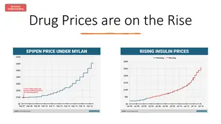
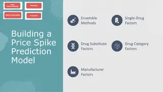
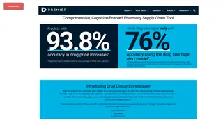
Module 1
Data Exploration and Analysis with Python
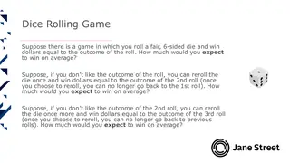
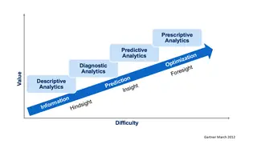
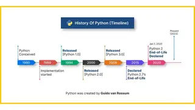
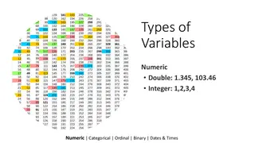
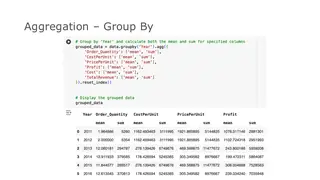
Module 1
Recitation: Data Sourcing, Cleaning, and VisualizationIn-class exercise
Classification Theory and Methods, with a guest lecture on machine learning for product data scienceGuest lecture from a CMU alum working as a product data scientist; lab on telco customer churn
Module 6
Model Evaluation and Hyperparameter Tuning
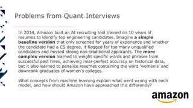
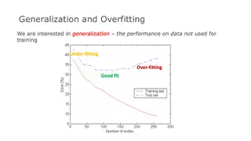
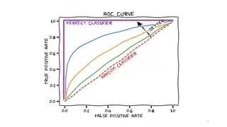
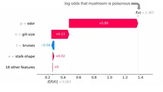
Module 7
Forecasting with Time Series Data
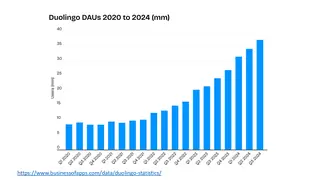
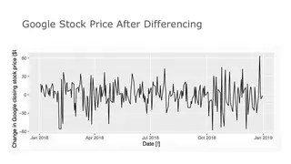
No class: spring breakNo class
Part III: Experiments, language, and vision
Module 8
A/B Testing and Multi-Armed BanditsNo class Tuesday. Case: game design at Cookie Cats. Midterm projects due March 15
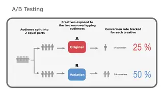
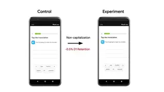
Module 9
Natural Language Processing Theory and Methods
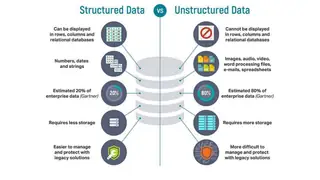
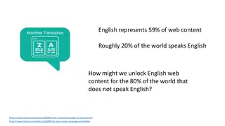
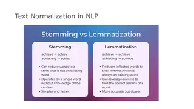
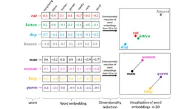
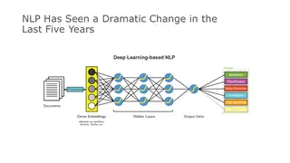
Module 10
Neural Network Fundamentals
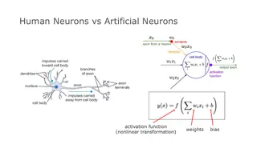
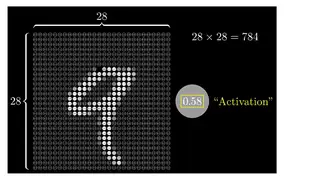
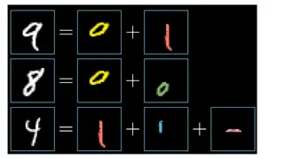
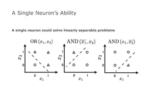
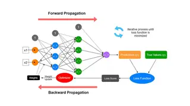
Module 11
Large Language Models
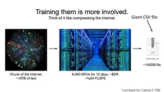
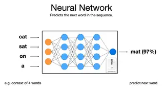
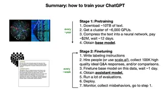
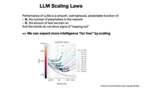
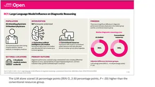
Module 12
Text Mining with Large Language ModelsIn-class exerciseLab week, short for Spring Carnival. Language model project due: routing student loan complaints
Module 13
Computer Vision Fundamentals
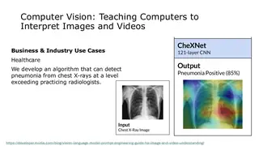
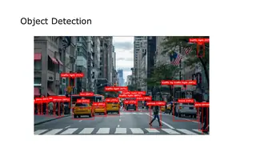
Module 14
Case: Tesla Vision vs. Waymo Sensor Fusion, and course wrap-upCaseComputer vision project due. Final projects due April 30
Tue, Jan 13Overview of Machine Learning and Analytics in OrganizationsData created worldwide each year keeps climbing, and most of it is never analyzed
Major assignments
In-class exercises and participation20%
Lecture days end with a short two or three question quiz on Canvas. Lab days end with submitting the code we wrote together, graded pass/fail.
Quizzes20%
Weekly open-book quizzes on Canvas covering lectures and readings, about 15 to 20 minutes each, with the two lowest scores dropped. No generative AI on quizzes.
Mini-labs10%
Short individual labs of one to two hours, graded on completion, each starting from a notebook. Topics include avocado prices and sales across U.S. markets, feature engineering and PCA on a 70-column real estate dataset, random forests predicting home sale prices, predicting which households drop out of a subsidized broadband program, and NLP on CFPB student loan complaints.
Applied ML projects30%
Four projects in groups of up to three, graded the way a professional deliverable would be. Clustering segments credit card customers with k-means and at least two methods for choosing the number of clusters. Classification models customer retention at a student travel company. The language model project has a model reclassify student loan complaints into six policy categories, check agreement between models with Cohen's kappa, and test whether models can score complaint severity. The last project applies computer vision.
Midterm project10%
Groups pick a decision problem for a public agency, nonprofit, or mission-driven organization and answer it with clustering, regression, or classification. Deliverables are an 8 to 12 page paper and a short presentation at the start of a class in the second half of the term.
Final project10%
A policy question of the group's own, or one I define (legislative text, public comment sentiment, satellite imagery), answered with NLP, neural networks, language models, or vision. Deliverables are a one-page proposal, a 5 to 10 page report, and a 3 to 5 minute pitch on the last day of class.
How the course works
Every method is framed as a policy question: which households in a broadband subsidy program are about to drop out, how to route thousands of student loan complaints, whether a language model and a person agree on how serious a complaint is. In the language model project, students have a model sort complaints into six policy categories and measure its agreement with other models using Cohen's kappa.
Instead of one end-of-term project, students do four applied projects across the semester (clustering, classification, language models, and computer vision), a midterm project for a public agency or nonprofit, and a final project with a three- to five-minute pitch. A CMU alum working as a product data scientist gave a guest lecture on machine learning for product decisions.
How the course developed
I took over this Heinz College course in Spring 2026 and rebuilt it as fourteen modules, each pairing a lecture with a lab. It runs from clustering and regression through A/B testing to language models and computer vision. It ends with a teaching case I wrote comparing Tesla's camera-only approach to self-driving with Waymo's sensor fusion.